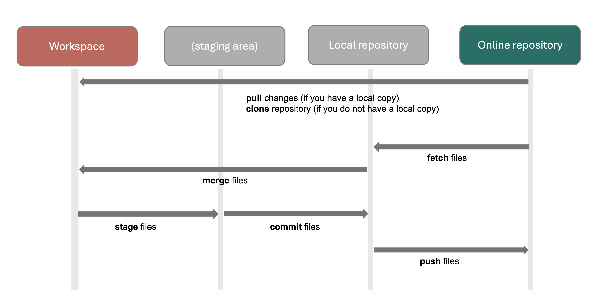

4 Introduction to git
4.1 Session Introduction
Git is a free, open-source, distributed version control tool, which allows you to keep track of changes made to a file over time. Github is an online platform which hosts git projects. Using Github can make it easier to use git, share your code with others and to program collaboratively. Although git or similar version control tools are widely adopted by software engineers, they’ve historically been less frequently used by pharmacoepidemiologists. In a recent study of programming code sharing in the journal Pharmacoepidemiology and Drug Safety, we found that only about 5% of people shared code over the past five years, and most of them did so in the supplementary materials of their paper rather than through Github.
In this session we will introduce you to git and Github, talk through different ways you might use these in your day to day work, and give some practical considerations for using git for different types of projects and in different organisations (i.e, in academia, or within private companies or consultancies). You’ll find the slides for this session below, as well as a glossary and link to additional resources.
4.2 ISPE 2024 Slides
4.3 Git glossary
| Term | Meaning |
|---|---|
| Repository | Project folder. A repository, often called a “repo”, can be public or private, and hosted either on your own Github profile or that of an organisation. |
| Remote | The central place where your code is stored, typically a cloud-based location such as Github. |
| Origin | The remote repository that your project was originally cloned from. Often used interchangeably with remote. |
| Clone | Create a copy of an existing repository into a specific folder. |
| Stage | Choose which files you want to add to a certain commit. You can think of this as choosing which files you want to be included in a particular snapshot. |
| Commit | Create a snapshot of the project. Git will only commit the files you’ve staged. |
| Push | Upload changes to a file to github |
| Branch | A copy of your repository. Specifically, it’s a copy of the main branch at a certain point in time. Branches allows you to add specific features or try out changes without the main codebase being affected. |
| Pull Request | Ask for your changes, on a branch, to be merged into another branch (usually the main branch) |
| Fetch | Download the contents from a remote repository to your local repository. It **does not** integrate this into your working files. |
| Merge | Incorporate changes, either from one repository to another (for example, from remote to local) or from a feature branch onto the main branch. |
| Pull | Downloads changes, typically from the remote to your computer. Technically, it’s fetch and merge combined. |
| README | A plain text file that provides information about a project. Your README will render automatically on Github and provide a ‘landing page’ and introduction to your project. Typically written in markdown. |
| License | A file which tells others what they can and cannot do with your code. If you do not specify a license, default copyright laws apply (you retain all rights to the code and no one can reproduce, distributed or create derivative works from your work). The default license is very restrictive and hinders reuse, it is almost always worth choosing a more permissive license for a public project. |
| .gitignore | File which tells git what types of files to ignore. A .gitignore may be automatically added to a repository, if you create it based on a template. |
4.4 ‘How to’ for common tasks
| Task | Command Line | Github Desktop |
|---|---|---|
| Create a new repository | git init |
Click File in the menu bar at the top, then New Repository to create a new repository |
| Clone a repository from Github to your local machine. |
|
Click File in the menu bar at the top, then Clone Repository and follow prompts to enter where you want to clone this to, and the url for the repository you want to clone. |
| Checkout a new branch for the first time | git checkout -b my_branch_name |
In the Github desktop bar, select Current Branch and then New Branch. |
| Stage files (choose which changes to include in a commit) | git add my_filename.R |
In the left hand bar, use the checkboxes to select files. To stage all files, click the top checkbox. |
| Commit | git commit -m “my informative commit message” |
In the bottom of the left hand bar, there is an option to commit to [branch_name]. If you do not use branches, this will most likely say commit to main or commit to master. Before you press commit, enter an informative commit message in the top bar. Github Desktop will autofill one based on the files that are included, but you can edit this. The description field is a more detailed explanation of the commit, which you can leave blank if you want. |
| Push commits to the remote. |
|
Click Push Origin in the top right-hand corner within the repository bar |
| Open a Pull Request. | Pull Requests are a feature of Github. Push your changes to the remote feature branch, and Github will automatically prompt you to open a pull request. | After pushing changes to a remote branch, Github Desktop will prompt you to open a pull request which will open Github. You can also navigate to Github yourself, and initiate the PR from there. |
| Fetch files from remote |
|
In the Github desktop bar, select Fetch Origin. If there are changes, you prompted to consequently Pull origin to incorporate those changes. |
| Merge in changes you’ve fetched from origin |
or
Git will merge this into the branch **you are working in**. Merge needs to be preceded by a git fetch. |
Not applicable; Github Desktop integrates changes by pulling them after fetching (see below). |
| Pull changes from origin. |
or
|
After Fetch Origin, you will be prompted to Pull Origin to incorporate any changes. |
| Save a text file with the title README in your project folder. | You will be prompted to ‘initialise’ the repository with a README when you click create New Repository, which will create a text file titled README in the project folder. | |
| Add a license to your repository | Github will take any file saved as LICENSE in the project repository and display it as the project license. Go to https://choosealicense.com/, pick one, and copy paste it into a plain text file called LICENSE. | Licenses are a feature of Github, so same as previously described. |
| Edit a .gitignore file. | Open the text file called .gitignore in the project repository and edit as required. If you cannot see it, turn on view hidden files (how to do this will vary depending on your OS). | In the menu bar, select Repository, then Repository Settings and select Ignored Files. Edit as required. |
4.5 Key Steps in a git workflow

4.6 Additional Resources
Weberpals, J. & Wang, S. V. The FAIRification of research in real-world evidence: A practical introduction to reproducible analytic workflows using Git and R. Pharmacoepidemiol. Drug Saf. (2024)
Morton, C. et al. Software development skills for health data researchers. BMJ Health Care Inform. 29, e100488 (2022).
Bryan, J. Excuse Me, Do You Have a Moment to Talk about Version Control? PeerJ Preprints (2017)
Webpages:
Cheatsheet with common
Gitcommands:Git manual by Atlassian (provider of the
Bitbucketplatform)Coursera courses:
- Introduction to Git and GitHub (Google)
- Version Control with Git (Atlassian)
- Getting Started with Git and GitHub (IBM)